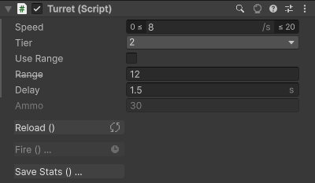

Get started
What Scry does
Scry replaces Unity's Inspector with one built entirely from your code. You no longer describe your code a second time with attributes and custom editors: Scry shows everything your scripts contain, in the structure you wrote, and analyzes what each method and property does to handle it on its own.
Whatever you edit or run from Scry's Inspector can be undone, or Scry asks you before it happens.

Install Scry
Scry supports Unity 6.0 to 6.6, and runs in the Editor only.
- Open the Package Manager (Window > Package Manager).
- Select the My Assets tab, then select Scry.
- Select Download, then select Import.
Select a GameObject that has one of your scripts on it: its component now shows Scry's Inspector.
To remove Scry, delete the Scry attributes from your scripts, then the Assets/Scry folder.
Author and contact
Scry is made by Juste Tools. For questions, bug reports and suggestions, use the contact form, or write to justetools@gmail.com.